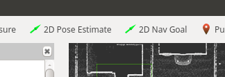

CARLA Waypoint Publisher
CARLA Waypoint Publisher는 웨이포인트 계산을 ROS 컨텍스트에서 사용할 수 있게 하고 CARLA 웨이포인트를 쿼리하는 서비스를 제공합니다. 웨이포인트에 대한 자세한 내용은 CARLA 문서를 참조하십시오.
Waypoint Publisher 실행
CARLA 서버가 실행 중인 상태에서 다음 명령을 실행합니다:
# ROS 1
roslaunch carla_waypoint_publisher carla_waypoint_publisher.launch
# ROS 2
ros2 launch carla_waypoint_publisher carla_waypoint_publisher.launch.py
목표 설정
사용 가능한 경우 /carla/<ROLE NAME>/goal 토픽에서 목표를 읽어오고, 그렇지 않으면 고정된 스폰 지점을 사용합니다.
목표를 설정하는 선호되는 방법은 RVIZ에서 '2D Nav Goal'을 클릭하는 것입니다.

Waypoint Publisher 사용
CARLA AD 데모는 Waypoint Publisher를 사용하여 CARLA AD 에이전트를 위한 경로를 계획합니다. 이것이 어떻게 사용되는지에 대한 예시는 CARLA AD 데모 launchfile을 참조하십시오.
ROS API
발행 (Publications)
| 토픽 | 타입 | 설명 |
|---|---|---|
/carla/<ego vehicle name>/waypoints |
nav_msgs/Path | 계산된 경로 발행 |
서비스 (Services)
| 서비스 | 타입 | 설명 |
|---|---|---|
/carla_waypoint_publisher/<ego vehicle name>/get_waypoint |
carla_waypoint_types/GetWaypoint | 특정 위치의 웨이포인트 가져오기 |
/carla_waypoint_publisher/<ego vehicle name>/get_actor_waypoint |
carla_waypoint_types/GetActorWaypoint | 액터 ID에 대한 웨이포인트 가져오기 |